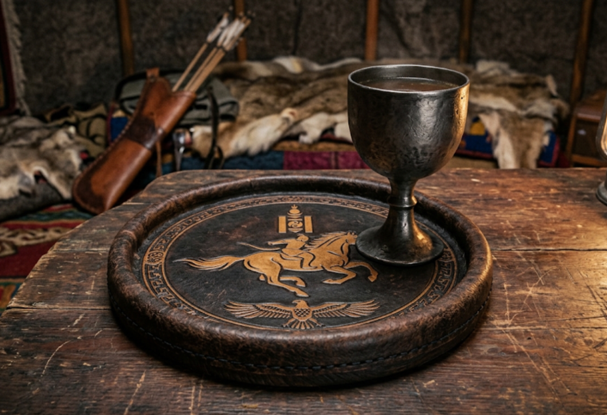

As Class Group #14 (Parviz and Kerem), we used structured user interviews and persona-driven requirements gathering to develop a coaster specification around a specific user's needs. The activity emphasized thermal and structural material selection for demanding drinkware and environments.
The design scenario used Genghis Khan as the client persona. Requirements considered irregular, heavy drinkware—including wooden cups, metal goblets, and large ceremonial bowls—and rough or mobile settings such as wooden tables, campaign chests, rugs, and yurts. The coaster needed to account for movement, including ground shaking from horses. Other requirements included high thermal resistance for hot tea or broth and complete liquid containment to protect fine wood furnishings from condensation and water rings.
| Parameter | Design specification |
|---|---|
| Client / target user | Genghis Khan (nomadic military leader) |
| Supported drinkware | Metal goblets, wooden cups, and ceremonial bowls |
| Primary constraints | High heat resistance, liquid containment, and impact durability |
| Operating surfaces | Wooden tables, campaign chests, rugs, and surfaces in yurts |
| Design priorities | 1. Durability; 2. Portability; 3. Ease of cleaning |